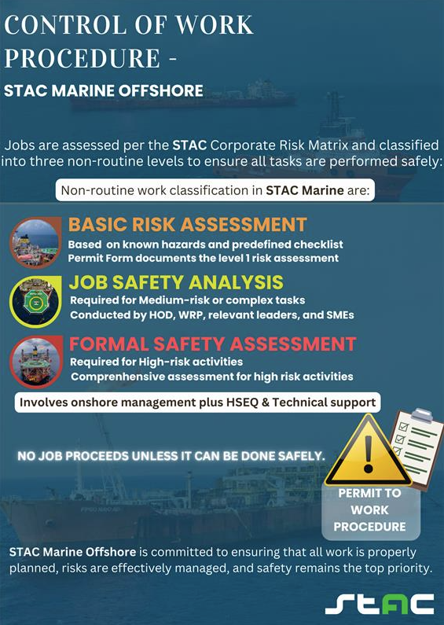

At STAC Marine Offshore, all work activities are planned, assessed, and executed in a structured manner to ensure risks are effectively managed and controlled. Every job is thoroughly assessed in accordance with the STAC Corporate Risk Matrix, and all work is governed by the Permit-to-Work (PTW) Procedure.
Work activities are classified as Routine or Non-Routine, with appropriate control measures applied to ensure hazards are identified, risks are assessed, and controls are implemented before work commences.
Non-Routine Work Classification
Non-routine jobs at STAC Marine Offshore are categorised into three levels based on the complexity and risk profile of the activity.
Level 1 – Basic Risk Assessment
Level 1 applies to activities involving known hazards with predefined procedures and checklists in place to manage potential consequences.
- Hazards and associated risk control measures are reviewed and confirmed within the relevant sections of the Permit to Work Form.
- The completed Permit Form constitutes the Level 1 Risk Assessment.
Level 2 – Job Safety Analysis (JSA)
A Job Safety Analysis (JSA) is required for medium-risk, complex, and/or multi-task activities. The JSA is conducted by a multidisciplinary team comprising the responsible Head of Department (HOD), Work Responsible Person (WRP), relevant department heads, and subject matter experts.
A JSA is mandatory for, but not limited to, the following activities:
- Hot Work A in a Non-Hazardous Area outside the designated Hot Work A Workshop (including within the Accommodation Block)
- Hot bolting
- Pressure testing
- Scaffolding above 2 metres in height or scaffolding of complex design
- Water cleaning/water jetting operations from 5,000 psi (344 bar) up to 25,000 psi (1,724 bar)
- Work involving radioactive materials
- Work involving asbestos
- Over-water / over-sea work
- Well intervention activities
- Level 2 lifting operations (refer to FPSO-MABO-LIFTO-PRO-405 – Lifting Operations)
- Temporary disabling of safety-critical systems, including firefighting, lifesaving, or evacuation systems
- Breaking containment (including isolation preparation) of systems containing toxic liquids or gases, e.g., H₂S
- Activities where risks are not fully addressed through the existing PTW procedures and Work Permit form
In addition, a JSA may be requested at any stage of the Permit to Work process by the Unit Management Team or by personnel involved in the execution of the task.
Level 3 – Formal Safety Assessment (FSA)
A Formal Safety Assessment (FSA) is a comprehensive risk assessment required for high-risk activities. These assessments typically involve participation from onshore Unit Management, HSEQ, and Technical Support teams.
Activities requiring a Formal Safety Assessment include, but are not limited to:
- Entry into pump rooms following a hydrocarbon spill (for cleaning purposes)
- Hot Work A in Hazardous Areas
- Level 3 lifting operations (refer to the Lifting Operations procedure)
- Hot tapping
- Ultra-high-pressure water jetting above 25,000 psi (1,724 bar)
- Normally prohibited Simultaneous Operations (SIMOPS) that must be carried out
- Activities where risks have not been reduced to As Low As Reasonably Practicable (ALARP) through the JSA process
The Offshore Installation Manager (OIM) may, at their discretion, require a Formal Safety Assessment to be conducted for any activity where additional assurance is deemed necessary.
STAC Marine Offshore is committed to ensuring that all work is properly planned, risks are effectively managed, and safety remains the top priority; no job proceeds unless it can be done safely.
